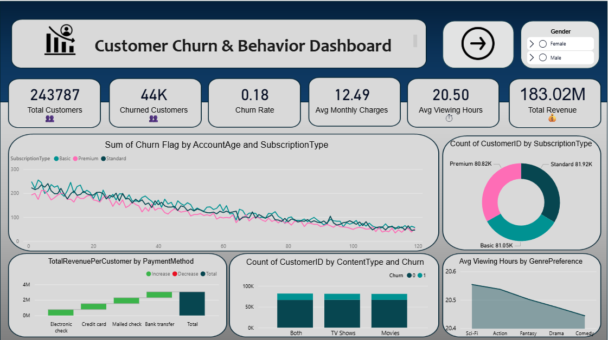
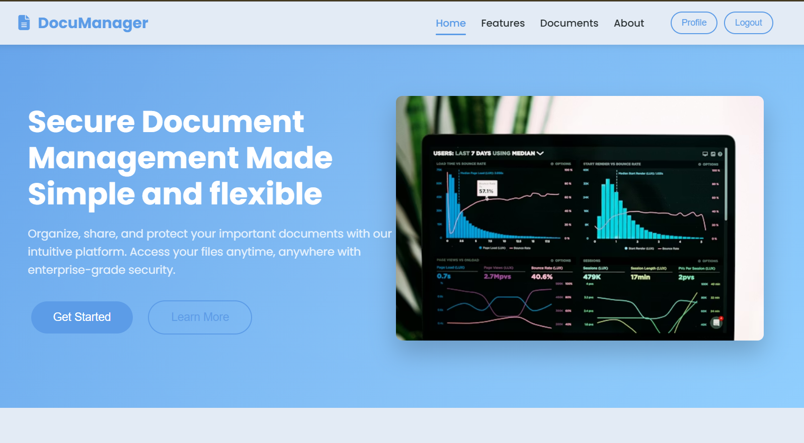
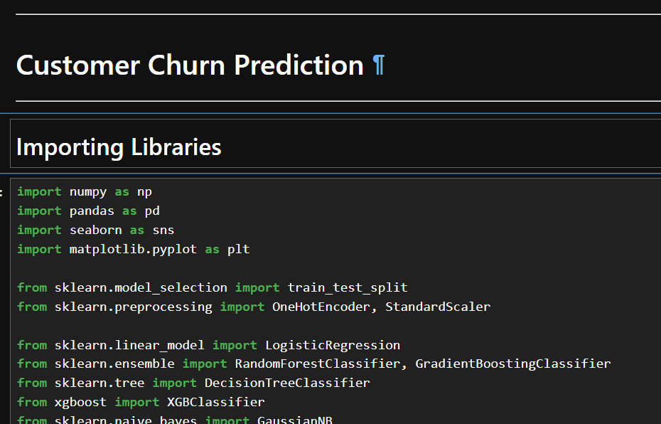
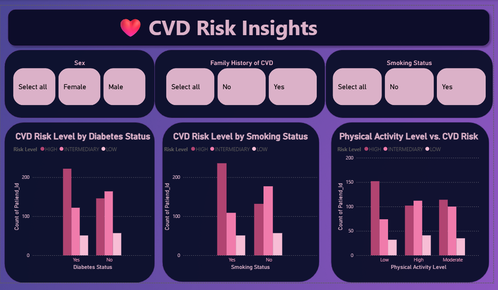
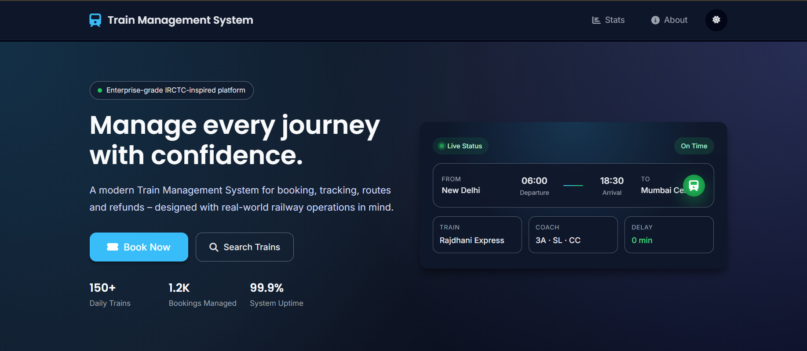
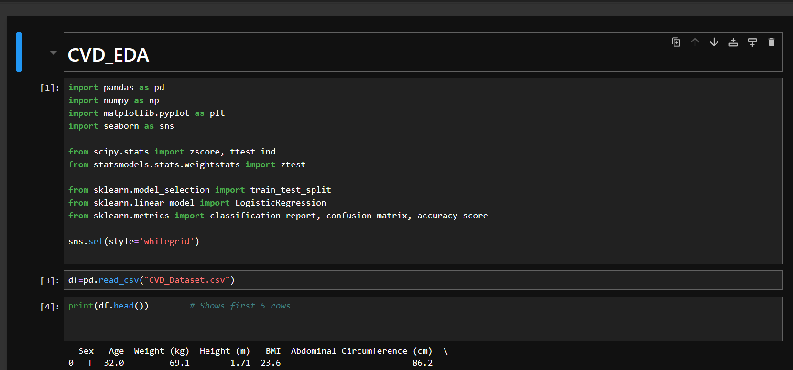
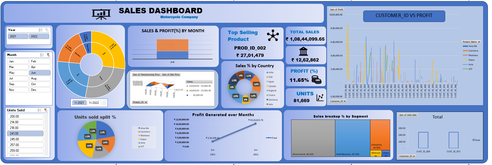
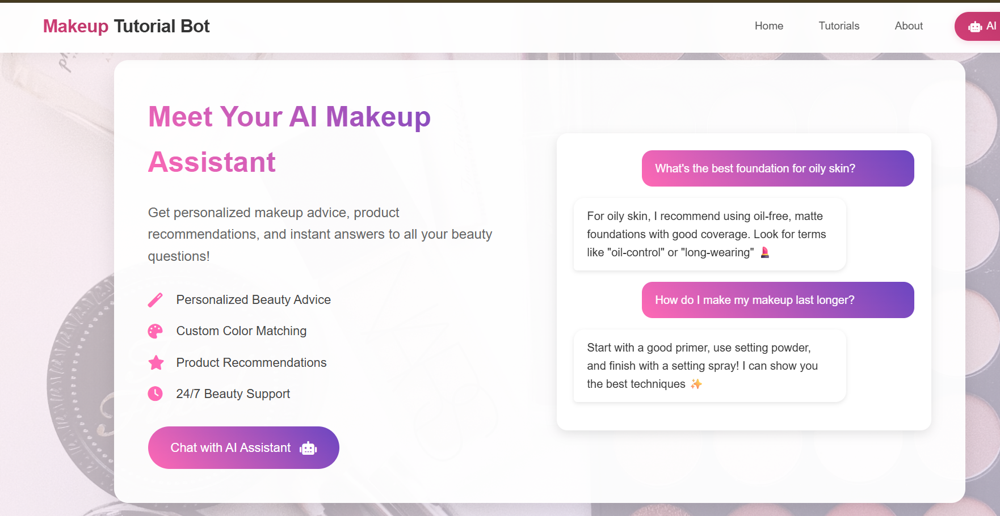

Software Engineer & Data Scientist
Engineering scalable software and intelligent data solutions for real-world impact. 📊
I'm Naga Sai Sitaram Manepalli, a software engineer with a surgical focus on Machine Learning and Scalable Systems. My journey is defined by a relentless pursuit of excellence—transforming abstract data into tangible solutions.
From precision healthcare dashboards to AI-driven image recognition, I don't just build software; I craft experiences that bridge the gap between human intuition and algorithmic precision.
A comprehensive view of my technical ecosystem — from models to production-ready code.
ML pipelines, analytics & visualization
Languages, DSA & system fundamentals
Version control, notebooks & tooling
At a glance
A quick view of the programs that shaped my engineering fundamentals and problem-solving mindset.
Lovely Professional University, Punjab
Sasi Junior College, Andhra Pradesh
Pupil Tree EM High School, Andhra Pradesh
Tracing my path through impactful roles and data-driven projects.
Skill Dzire Technologies
Advanced application of machine learning architectures to
solve business-critical data problems. Responsibilities included:
• Engineering sophisticated data pipelines for high-velocity data streaming and
batch processing.
• Implementing predictive models with scikit-learn and TensorFlow, achieving
significant improvements in prediction accuracy.
• Translating complex statistical findings into actionable business strategies
through interactive dashboards.
Infosys Springboard (ClimateScope Project)
Currently working on the ClimateScope initiative, focusing on
global climate data synthesis and predictive environmental modeling:
• Analyzing massive multi-dimensional climate datasets to identify long-term
thermal anomalies.
• Developing automated data extraction scripts for meteorological APIs to feed
real-time analytics engines.
• Collaborating on a unified visualization framework for tracking global carbon
emissions and temperature fluctuations.
Summer Training Program
Earned a **Certificate of Merit** for outstanding performance
and innovation during the summer technical training:
• **Major Project: CVD Dashboard**: Designed and developed a comprehensive
Cardiovascular Disease (CVD) analysis dashboard for risk assessment.
• Implemented statistical modeling to correlate lifestyle factors with cardiac
health indicators.
• Recognized for exceptional project architecture and data visualization
clarity.

Churn Dash
Built churn dashboard analyzing 243K+ users with 18% churn rate and ₹27M revenue at risk.

Doc Manager
Mastered advanced Git branching and manual merge conflict resolution through a structured document management interface.

Churn Dash
Transforming customer data into predictive insights to reduce churn and protect revenue.

Doc Manager
Interactive dashboard showing key CVD risk factors ❤️, health indicators 🧠, and predictive trends 📈 for quick insights.

Predictive AI
A high-performance C++ backend utilizing advanced data structures to optimize railway routing and search efficiency by 40%

EDA Analysis
Explored cardiovascular health data to detect key patterns, correlations, and risk factors using visual and statistical analysis.

Sales Dash
Bringing clarity to complexity through interactive dashboards and meaningful data visualization.

Tutorial Bot
A creative blend of technology and beauty — offering tailored tutorials, product suggestions, and pro tips for every style.
Industry-recognized credentials validating my expertise.
IIT Ropar / SWAYAM
Neural Networks, CNNs, and optimization algorithms for deep learning.
Deloitte / Forage
Simulation of data analytics consulting projects at Deloitte.
Udemy / Academy
Mastering LLMs, ChatGPT, and AI integration strategies.
Coursera / DeepLearning.AI
Advanced techniques for large language model optimization.
IBM
User-centric design methodologies at an enterprise scale.
HackerRank
Validated proficiency in complex algorithms and data structures.
Tech Challenge 2025
Recognition for rapid prototyping and innovative architectural design.
Academic Publication
Published research contribution focused on technical innovations.
Google / Coursera
Core essentials of computer networking and technical support systems.
I'm always open to discussing new projects, creative ideas, or opportunities to be part of your vision.
Saisitaram49@gmail.com
Andhra Pradesh, India